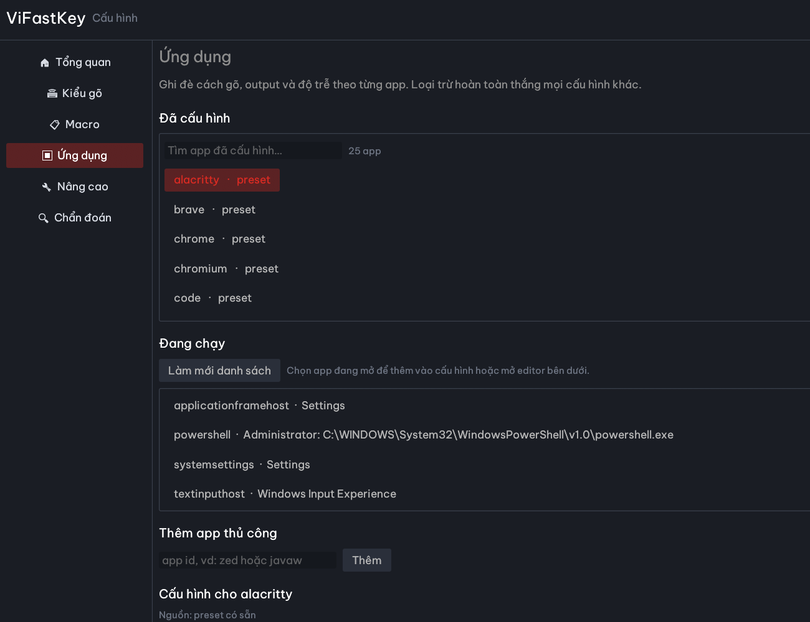
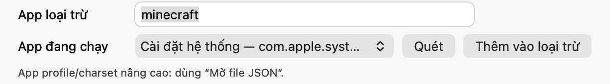
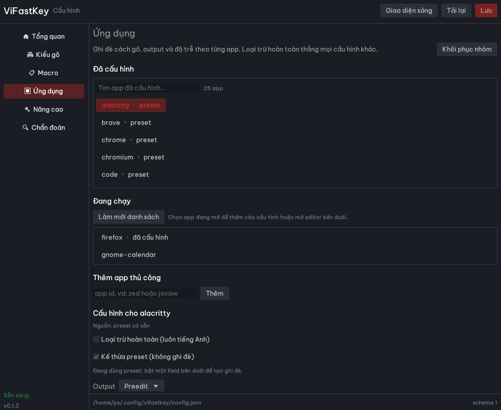

Telex · Simple Telex · VNI · VIQR
Đổi kiểu gõ tức thì. Hỗ trợ Quick Telex, w → ư, phím [ ] và kiểu đặt dấu cũ/mới.
Telex, Simple Telex, VNI và VIQR trên một lõi Rust nhỏ, thuần logic. Gõ thử bằng WASM trong trình duyệt, hoặc gọi API Python để tích hợp vào công cụ của bạn.
Engine chỉ giữ chuỗi phím thô của từ hiện tại rồi dựng lại từ đầu. Nhờ vậy dấu luôn đúng vị trí, kể cả khi gõ dấu trước hay sau.
Đổi kiểu gõ tức thì. Hỗ trợ Quick Telex, w → ư, phím [ ] và kiểu đặt dấu cũ/mới.
Từ Việt hợp lệ luôn thắng: mix → mĩ, too → tô. Gõ tiếng Anh bằng escape Telex (mixx → mix) hoặc chuyển chế độ Anh.
ko → không, vn → Việt Nam. Giữ đúng kiểu hoa/thường và tự viết hoa đầu câu nếu bật.
Terminal dùng preedit, Chrome chờ ack, Firefox tắt sửa từ cũ, game tắt bộ gõ. Cùng một engine, hành vi phù hợp từng app.
Gõ thêm dấu vào từ vừa xong: tiêng + s → tiếng. Backspace xoá đúng ký tự hiển thị và giữ dấu phần còn lại.
Rust core + C ABI cho Windows hook, IMK, Fcitx5/IBus, WASM cho web, Python làm oracle. Cùng một bộ golden test và conformance.
Mỗi phím đi qua Composer rồi trả về đúng một hành động: chèn, thay thế, preedit hoặc để hệ điều hành xử lý. Adapter chỉ việc áp Action — không chứa logic tiếng Việt.
// gõ: t i e e n g s
{
"type": "replace",
"delete_before": 3,
"insert": "ếng",
"pass_key": false
}Playground chạy WASM ngay trong trình duyệt. API Python chạy bản oracle của dự án — cùng engine dùng để sinh bộ conformance cho bản Rust — nên bạn có thể kiểm tra, tự động hoá hoặc tích hợp mà không cần cài gì.
Hỗ trợ < Backspace, | Enter, ~ Escape. Không lưu nội dung bạn gõ.
# chuỗi phím thô → chữ Việt
curl -s https://key.vifast.org/api/type \
-H 'content-type: application/json' \
-d '{"text":"Tieengs Vieejt","method":"telex","tone":"new"}'/api/charset chuyển Unicode, TCVN3, VNI-Windows, VISCII, VIQR, CP1258, NCR...Cùng local-first, cùng giấy phép MIT: một bên gõ thành chữ, một bên đọc thành tiếng, một bên giữ lõi hệ điều hành.
Bộ gõ tiếng Việt nhỏ, nhanh, thuần logic trên lõi Rust.
Giọng đọc tiếng Việt chạy CPU trên ONNX, 24 kHz.
Microkernel viết bằng Rust, capability-based, chạy trên QEMU.
Windows và Linux có tab Ứng dụng với picker app đang chạy; macOS có picker trong Cấu hình. Chọn app, đặt loại trừ hoặc override riêng, rồi lưu — không phải nhớ tên process.

Phù hợp để loại trừ game (Minecraft, Liên Minh…) hoặc app không muốn gõ tiếng Việt.

Danh sách app đang chạy được quét lại mỗi lần mở cửa sổ; bấm Quét nếu vừa mở thêm app.

firefox, code) hoặc nhập app id thủ công.Trên Linux, bấm X ẩn xuống khay nếu desktop có AppIndicator/StatusNotifier; thoát hẳn bằng menu tray. Nếu không thấy icon khay, tắt tùy chọn này trong Nâng cao. App profile/charset nâng cao vẫn dùng JSON.
Ảnh minh hoạ từ bản 0.1.2; bấm ảnh để mở lớn. Linux lấy app id từ tiến trình, vẫn có thể nhập tay hoặc dùng JSON.
Bản phát hành 0.1.2: Windows hook-only, macOS IMK, Linux IBus/Fcitx5, Android, iOS Simulator, Chrome/Edge và UEFI x86_64 demo. Mỗi tab có file tải, yêu cầu hệ thống và các bước cài chi tiết.
Hook-only một binary: Settings + tray + hook, không cần TSF, không cần Administrator.
Set-ExecutionPolicy -Scope Process Bypass
.\install.ps1%LOCALAPPDATA%\ViFastKey, thêm autostart và chạy hook nền. Không cần quyền Administrator.Win+Space chọn ENG. ViFastKey chỉ xử lý khi input source là English US; Vietnamese/Japanese sẽ pass-through.Tieengs Vieejt → Tiếng Việt. Alt+, đổi Việt/Anh; Ctrl+Shift+, mở Settings.Gõ bị đôi hoặc không gõ được: kiểm tra input source đang là English US (ENG), không phải Vietnamese; mở Settings → kiểm tra trạng thái hook.
Không thấy tray: chạy lại vifastkey-settings.exe hoặc kiểm tra Task Manager; menu tray → Thoát rồi mở lại.
Gỡ: chạy .\uninstall.ps1; config/macro trong %APPDATA%\ViFastKey được giữ lại.
Input method native cho Intel và Apple Silicon; preedit, menu Telex/Simple Telex/VNI, macro và app profile.
./install.sh trong thư mục vừa giải nén. Script copy app vào ~/Library/Input Methods và đăng ký input source.xattr -dr com.apple.quarantine "$HOME/Library/Input Methods/ViFastKey.app"Tieengs Vieejt → Tiếng Việt. Menu bar có Telex/VNI, Việt/Anh và Settings.Hỏi “Allow ViFastKey…” nhiều lần: mỗi lần build/cài lại, chữ ký ad-hoc đổi nên macOS coi là app mới. Xoá input source, chạy lại installer một lần, rồi đăng xuất/đăng nhập; sau đó đừng cài lại. Kiểm tra:
"$HOME/Library/Input Methods/ViFastKey.app/Contents/MacOS/ViFastKeyIM" --statusPhải thấy enabled=true. Nếu có crash report của ViFastKeyIM trong ~/Library/Logs/DiagnosticReports, gửi kèm khi báo lỗi.
“App is damaged” hoặc không mở: chạy lệnh xattr ở trên; hoặc System Settings → Privacy & Security → Open Anyway.
Không gõ được trong app: kiểm tra input source đang chọn ViFastKey; thử app khác (TextEdit) để loại trừ app đang chặn IMK.
Gỡ: xoá app trong ~/Library/Input Methods, xoá input source và logout/login.
Chỉ cài MỘT trong ba — IBus, Fcitx5 hoặc Wayland standalone — theo desktop đang dùng. Cài nhiều hơn sẽ tranh nhau xử lý phím, gõ đôi hoặc mất chữ.
tar -xzf vifastkey-ibus-linux.tar.gz
cd vifastkey-ibus
./install.shibus, python3-gi, gir1.2-ibus-1.0 (Ubuntu/Debian).tar -xzf vifastkey-fcitx5-linux-x86_64.tar.gz
cd vifastkey-fcitx5
./install.shfcitx5 và frontend GTK/Qt tương ứng.zwp_input_method_v2:tar -xzf vifastkey-wayland-linux-x86_64.tar.gz
cd vifastkey-wayland
./install.shlinux/wayland/README.md để biết giới hạn và cách chạy.ibus restart (IBus) rồi gõ thử.Không thấy ViFastKey: logout/login, chạy ibus restart hoặc khởi động lại Fcitx5; kiểm tra engine đã cài đúng user.
Gõ được ở app này nhưng không app khác: kiểm tra GTK_IM_MODULE/QT_IM_MODULE; app chạy XWayland có thể cần cấu hình riêng.
Thiếu thư viện Settings UI: cài libxkbcommon, libwayland, libx11, libgl1 theo distro.
IME Android đầy đủ, chạy local; bản APK debug chưa phát hành trên CH Play. Bản cập nhật 05/11/2026 (build 27): gõ sai rồi xoá hết từ + dấu cách sẽ khôi phục từ trước để sửa tiếp; ẩn rồi mở lại bàn phím về trang chữ (hoặc bàn phím số), không giữ trang ký tự đặc biệt. Vẫn có `replaceText()` trên Android 14+, fallback batch cho máy cũ/field dài, mặc định không gạch chân, chiều cao 100–145%, cài đặt nhanh, 1.121 emoji, hàng số Telex/VNI.
Tieengs Vieejt → Tiếng Việt; mở Settings của ViFastKey để đổi Telex/VNI, dấu cũ/mới.“App not installed”: gỡ bản cũ trước, kiểm tra dung lượng; APK hỗ trợ arm64/x86_64.
Không chuyển được bàn phím: bật ViFastKey trong On-screen keyboard, sau đó giữ phím cách hoặc dùng biểu tượng bàn phím.
Gõ không ra dấu: kiểm tra kiểu gõ trong Settings (Telex/VNI) và chế độ Việt/Anh.
Keyboard extension chạy trên iOS Simulator; chưa ký Apple Developer nên chưa cài lên iPhone thật.
Không thấy Simulator: cài runtime trong Xcode → Settings → Platforms; kiểm tra dung lượng ổ đĩa.
Không thấy bàn phím: Simulator Settings → General → Keyboard → Keyboards → Add New Keyboard; bật Full Keyboard Access nếu cần.
Extension MV3 dùng WASM, gõ tiếng Việt trong trình duyệt; không cần server.
chrome://extensions; Edge: edge://extensions.Tieengs Vieejt; bấm icon extension để đổi Việt/Anh hoặc Telex/VNI.Load unpacked lỗi: kiểm tra đã giải nén đúng thư mục có manifest.json, không chọn nhầm thư mục cha.
Không gõ được trên trang: reload trang sau khi cài; một số trang chặn extension hoặc dùng contenteditable đặc biệt.
Phát hành 05/11/2026 · v0.1.2 UEFI demo. Chạy trước khi OS boot: editor Telex/VNI, logo + URL trang chủ, GOP + font tiếng Việt nhúng và QR trong help.
EFI/BOOT. Kết quả đúng: \EFI\BOOT\BOOTX64.EFI.BOOTX64.EFI bằng key riêng và enroll cert). Bật USB boot, tắt Fast Boot/CSM nếu USB không hiện.Tieengs Vieejt → Tiếng Việt; thuowng → thương; dd → đ.F1 trợ giúp + QR trang chủ (F1 lần nữa hoặc Esc để đóng) · F2 Việt/Anh · F3 Telex/VNI · F10 thoát về boot menu · Backspace xoá phím thô.USB không hiện trong boot menu: kiểm tra FAT32, đúng đường dẫn \EFI\BOOT\BOOTX64.EFI, tắt Fast Boot/CSM, thử cổng USB 2.0.
Secure Boot violation: tắt Secure Boot hoặc ký file. Không dùng file từ nguồn không rõ.
Màn hình đen/không có GOP: firmware không cung cấp graphics output; thử máy khác hoặc QEMU/OVMF.
F10 quay về boot menu: đúng thiết kế; rút USB rồi khởi động lại máy.
Dùng engine trực tiếp trên desktop hoặc nhúng vào web; phù hợp để tích hợp, test và phát triển.
./vfk --demo
./vfk
./vfk --text "Tieengs Vieejt"vifastkey-wasm.zip, phục vụ bằng HTTP và mở trình duyệt:python3 -m http.server 8080 -d vifastkey-wasmpython/ hoặc deploy FastAPI theo deploy/vifastkey_web/README.md; playground trên trang này gọi engine Python qua /api/type.Báo lỗi, đề xuất tính năng hoặc góp ý nội dung. Nội dung và liên hệ chỉ admin xem, không hiển thị công khai.
Số liệu tổng hợp từ API Python, tự làm mới khi tải trang. Không lưu nội dung bạn gõ.
Đang tải…
“Khách ẩn danh” là ước lượng theo hash visitor/IP; không lưu nội dung gõ thử hay IP thô. Lượt tải chỉ đếm lúc bấm nút trên landing, không phải số file đã tải xong. Mở trang admin ↗
Tải trực tiếp từ GitHub Releases của vifast-oss/ViFastKey.
Đang tải…